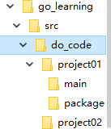
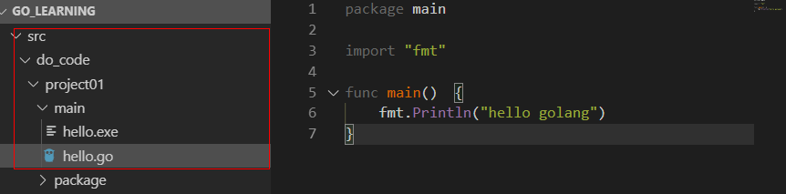
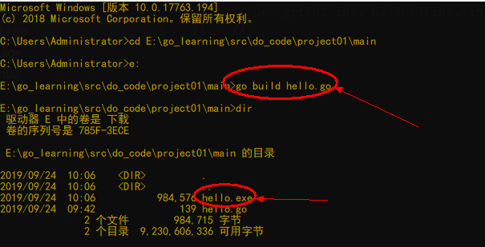
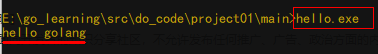
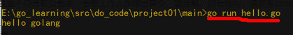
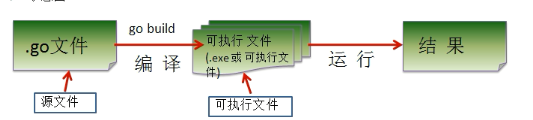
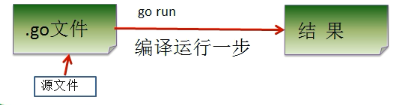

一 First Golang
1.1 需求
第一个程序hello.go，可以输出"hello golang"
1.2 开发步骤
开发这个程序时，我们的目录结构怎么处理（让自己或者别人开起来更加清晰舒服）
结构如下

代码如下：

对上图的说明
（1）go文件的后缀是 .go
（2）package main
表示该 hello.go文件所在的包是main，在go中，每个文件都必须在归属于一个包。
（3）import "fmt"
表示：引入一个包，包名 fmt，引入该包后，就可以使用fmt包的函数，比如：fmt Println
（4）func main（）{
}
funcs是一个关键字，表示一个函数。
main 是一个函数名，是一个主函数，既我们程序的入口。
（5）fmt.Println("hello golang ")
表示调用 fmt包的函数 Println 输出 "hello golang "
1.3 编译运行hello.go
1)通过go build 命令对该go文件进行编译，生成exe 文件

2）运行hello.exe文件即可

3）注意“通过go run 命令可以直接运行hello.go程序【类似执行一个脚本文件的形式】

go build hello.go --> hello.exe 和 go run hello.go 存在差异
在底层 go run 也存在一个源码编译的过程所以执行时间会比前者长
所以我们一般都是先编译生成exe程序再执行
1.4 Golang执 行流程分析
如果是对源码编译后，再执行，go执行流程如下图

如果我们是对源码直接 执行 go run 源码，Go的执行流程如下图

1.5 说明：两种执行流程的方式区别
1）如果我们先编译生成了可执行文件，那么我们可以将该可执行文件拷贝到没有go开发
环境的机器上，依然可以运行。
2）如果我们是执行go run go源代码，那么如果要在另一个机器上这么运行，也需要开
发环境，否则无法执行。
3）在编译时，编译器会将程序运行依赖的库文件包含在执行文件中，所以，可执行文件
变大了很多。